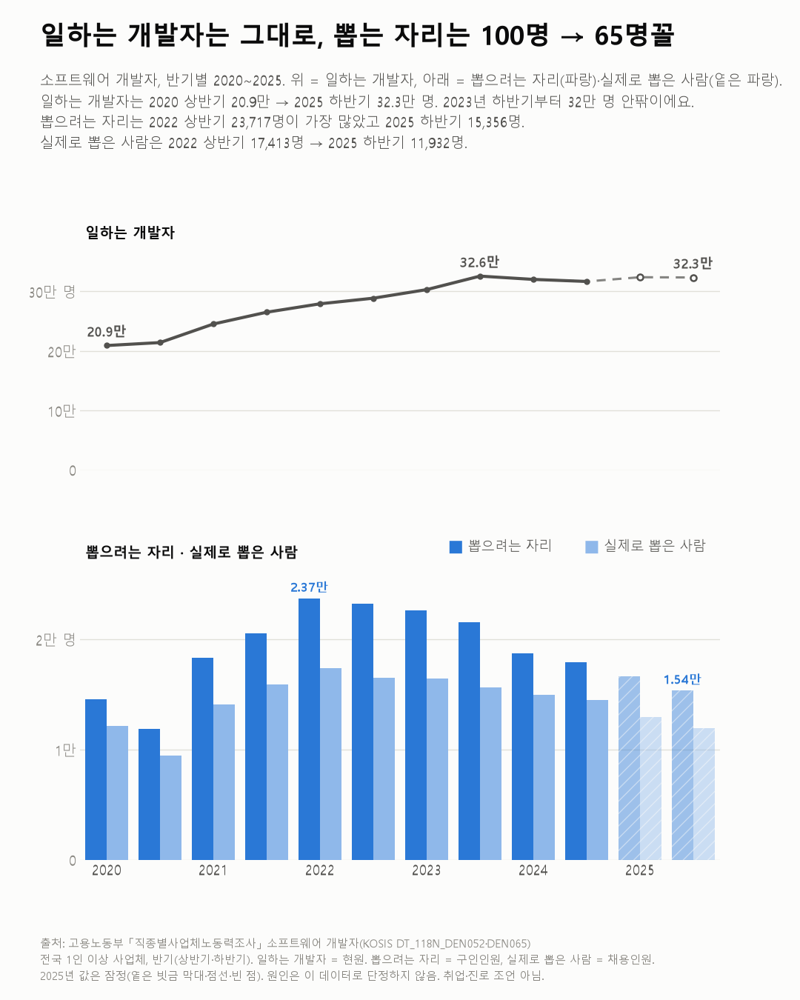
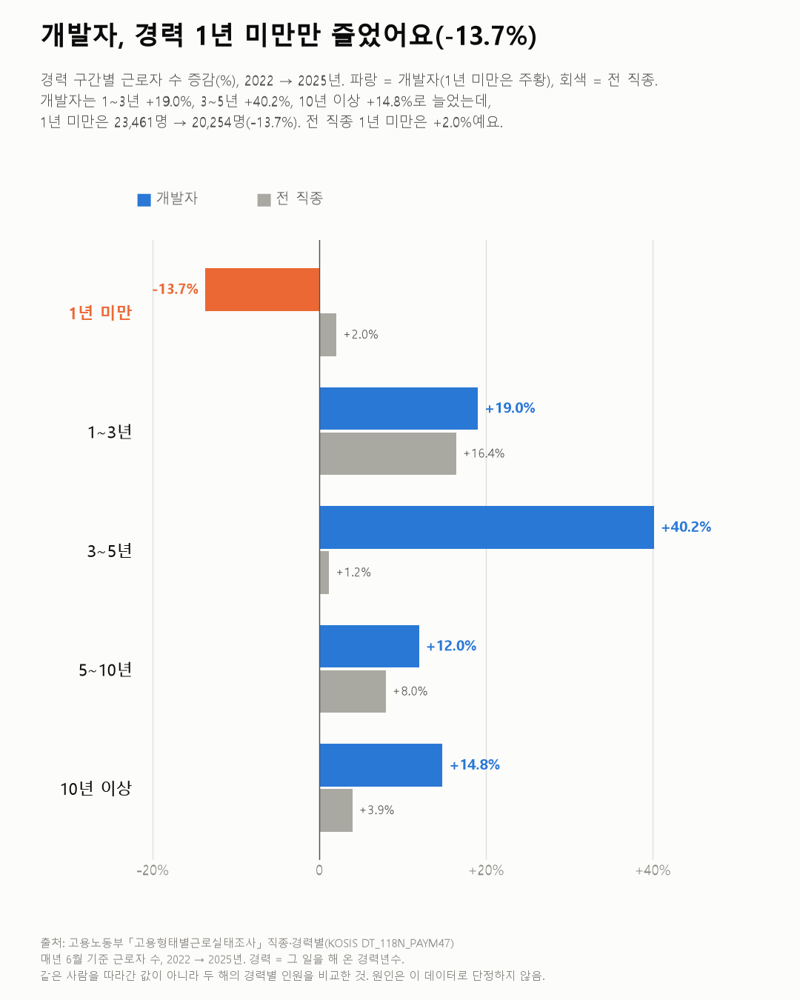

개발자는 그대로인데, 신입 자리만 줄었어요
일하는 사람은 그대로인데 새로 들어가는 사람만 줄었어요. 지금 1년 차가 적으면 3년 뒤 3년 차도 적을지, 그게 궁금해졌어요.

- 일하는 개발자는 32만 명 안팎이에요. 2023년부터 거의 그대로예요.
- 새로 뽑는 자리는 줄었어요. 2022년에 100명을 찾던 회사들이 지금은 65명을 찾아요.
- 경력별로 보면 1년 미만만 줄었어요. 3년 새 3천 명 넘게요.
요즘 개발자 신입 공고가 없다는 얘기, 흔히 하죠. 정말 그런지 보려고 일하는 개발자 수부터 세어 봤어요. 사람이 줄었다면 공고가 주는 것도 당연하니까요.
그런데 사람은 줄지 않았어요. 2020년 상반기 20.9만 명에서 2023년 하반기 32.6만 명까지 늘고 나서, 그 뒤로는 제자리예요. 소프트웨어 회사 직원도 작년 42.4만, 올해 42.6만 명으로 거의 같았어요.
줄어든 건 새로 뽑는 자리였어요. 2022년 상반기엔 회사들이 개발자를 2만 3천여 명 찾았는데, 지금은 1만 5천여 명을 찾아요. 100명을 찾던 회사들이 이제 65명을 찾는 거예요.
경력별로 쪼개 보니 더 분명했어요. 1~3년 차도, 3~5년 차도, 10년 차 이상도 다 늘었는데 1년 미만만 3천 명 넘게 빠졌어요. 전 직종으로 보면 신입은 조금 늘었는데 말이에요. 이건 좀 의외였어요.


20대 일자리도 같은 쪽이었어요. 정보통신업에서 20대 이하가 가진 일자리는 3년 새 넷 중 하나가 사라졌어요. 같은 업종 30대 일자리는 늘었어요. 월급도 갈렸어요. 신입 개발자 월급은 2022년 이후 3.4% 올랐고, 전 직종 신입은 8.2% 올랐어요.
계산하다 하나 더 눈에 띄었어요. 뽑으려던 자리가 다 채워지지도 않더라고요. 개발자를 뽑으려던 자리 중 실제로 사람을 뽑은 건 77.7%였어요. 전체 직종은 91.6%예요. 기업 조사에서도 경력자를 뽑겠다는 곳이 신입을 뽑겠다는 곳보다 많았어요(SW 인력 충원 글).
신입 자리는 줄었는데 있는 자리도 다 안 채워져요. 회사가 찾는 사람과 문 앞에 선 사람이 서로 다른 걸까요? 이 숫자만으로는 거기까진 알 수 없었어요.
이 숫자는 어디서 왔나요
출처
기준일 2020~2026년(조사마다 달라요: 반기, 매년 6월, 분기, 매년).
고용노동부직종별사업체노동력조사
- 직종별·규모별 현원·구인·채용KOSIS DT_118N_DEN052원본 보기
소프트웨어 개발자 현원·구인·채용인원, 반기 2020~2025
고용노동부고용형태별근로실태조사
- 직종·경력년수별 임금 및 근로조건KOSIS DT_118N_PAYM47원본 보기
개발자·전 직종 경력별 근로자 수·월급, 2022·2025
국가데이터처임금근로일자리동향
- 연령 및 산업대분류별 임금근로 일자리KOSIS DT_1FL_7008원본 보기
20대 이하 정보통신업 일자리, 1/4분기
과학기술정보통신부ICT인력동향실태조사
- ICT산업 직종별 인력현황KOSIS DT_127007_003원본 보기
소프트웨어 회사 직원, 2024·2025
어떻게 셌나요
- 네 조사는 '개발자'를 세는 기준이 달라요. 어느 회사든 개발 일을 하는 사람(직종), 소프트웨어 회사의 모든 직원(회사), 정보통신업 일자리(산업)가 섞여 있어요. 그래서 숫자끼리 더하거나 나누지 않았고, 차트 하나에는 한 조사만 넣었어요.
- 현원은 지금 일하는 사람, 구인은 회사가 뽑으려고 찾은 사람 수, 채용은 실제로 뽑은 사람 수예요.
- '100명 → 65명'은 개발자 구인이 가장 많던 2022년 상반기를 100명으로 놓고 2025년 하반기를 같은 비율로 바꾼 값이에요.
- 경력은 그 일을 해 온 햇수예요. 같은 사람을 따라간 값은 아니에요.
- 2025년 현원·구인·채용 값은 잠정치라 차트에서 옅게 칠했어요.
한계 4가지
이 데이터로 말할 수 없는 것
- 네 조사의 '개발자' 범위가 달라서, 같은 방향을 가리킨다는 것까지만 말할 수 있어요.
- 고용형태별근로실태조사는 표본조사라 경력별 칸엔 오차가 있을 수 있어요. 1년 미만만 줄어든 방향은 분명하지만, -13.7%라는 크기는 오차를 탈 수 있어요.
- 20대 일자리 감소엔 20대 인구 감소가 섞여 있어요.
- 왜 이렇게 됐는지(AI 확산, 경기, 채용 방식 변화 등)는 이 데이터로 알 수 없어요. 취업·진로 조언도 아니에요.
새 글 나오면 받아 보기
피드 리더 앱에 이 사이트 주소를 한 번 넣어 두면, 새 글이 올라올 때 앱에 떠요. 가입이나 메일 주소는 필요 없어요.
받는 법 보기
- 피드 리더 앱을 하나 골라요. 새 글을 모아 보여 주는 앱이에요. 예를 들면 Feedly나 Inoreader가 있어요. 둘 다 무료고 웹·휴대폰에서 써요.
- 앱에서 '구독 추가'(+)를 누르고 아래 주소를 붙여 넣어요.
- 끝이에요. 새 글이 올라오면 앱 목록에 떠요.
https://protofu.github.io/opendata-insight/feed.xmlFeedly를 쓴다면 여기를 눌러 바로 추가할 수도 있어요.